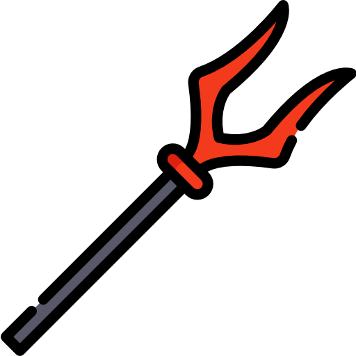

Hades

Hades é o deus do Submundo e um dos três grandes irmãos olímpianos ao lado de Zeus e Poseidon.
Filho dos titãs Cronos e Reia, Hades participou da guerra contra os titãs e, após a vitória, recebeu o domínio do mundo dos mortos.
Diferente do que muitos imaginam, Hades não é o deus da morte em si, mas sim o governante responsável por manter a ordem das almas no Submundo.
Seu reino é um lugar sombrio, silencioso e temido até pelos próprios deuses do Olimpo.
Cercado por criaturas monstruosas, espíritos e rios infernais, Hades governa com autoridade absoluta, garantindo que os mortos permaneçam em seu devido lugar. No universo de Percy Jackson, ele é retratado como uma figura intimidadora, misteriosa e extremamente poderosa.
Mesmo vivendo afastado do Olimpo, Hades possui um poder gigantesco, capaz de rivalizar com Zeus e Poseidon. Seus símbolos incluem o elmo das sombras, que lhe permite desaparecer, e Cérbero, o gigantesco cão de três cabeças que protege os portões do Submundo.